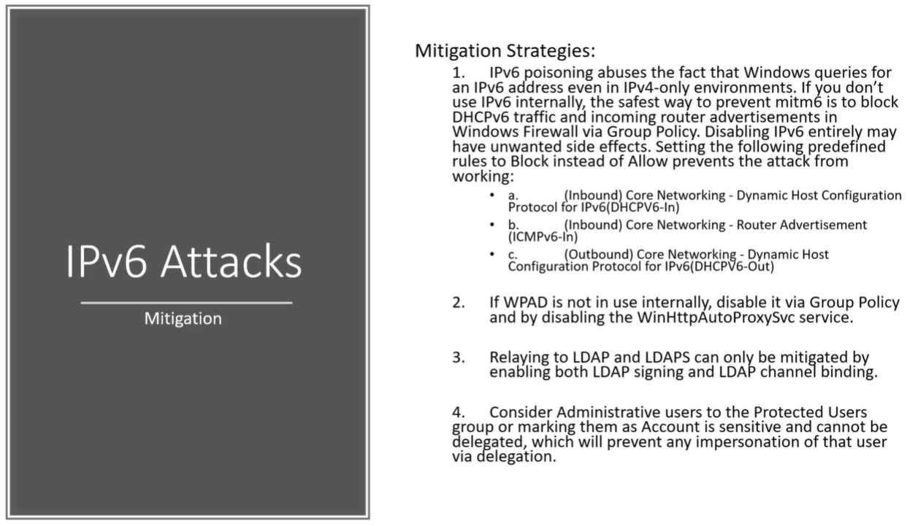

If IPV isn't enabled in the network then guess what ?_?
We can't be na IPV6 DNS server because there's nothing for us to do
So disabling IPV6 can have unwanted side effects:
Will define some block rules instead of allow rules when we have our firewall
If not using wpad then have to disable it using group policy
If we are able to do delegate access against a machine then we can know just
abuse that feature against the machine
We can cut the head off by disabling IPV6 but best practise says hey you know
we should actually just do some block rules in the firewall
